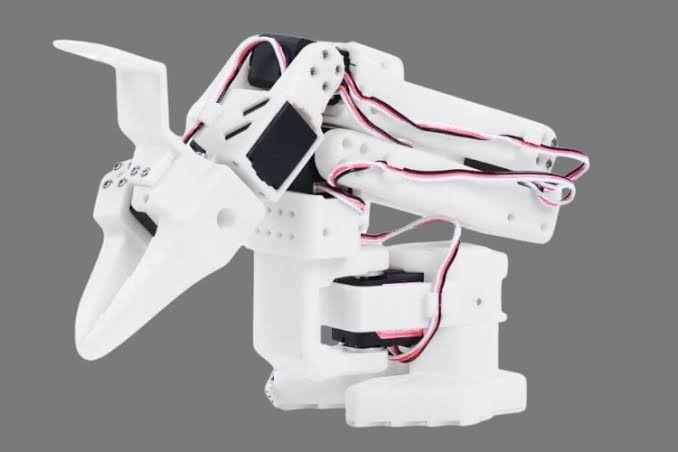

| Joint | Target (°) | Actual (°) | Error (°) | Status |
|---|---|---|---|---|
| Shoulder Pan | 0.9° | 0.9° | 0.0° | ✔ Reached |
| Shoulder Lift | -104.6° | -104.6° | 0.0° | ✔ Reached |
| Elbow Flex | 100.6° | 100.6° | 0.0° | ✔ Reached |
| Wrist Flex | 60.0° | 60.0° | 0.0° | ✔ Reached |
| Wrist Roll | 1.7° | 1.7° | 0.0° | ✔ Reached |
| Gripper | 3.2% | 3.2% | 0.0% | ✔ Reached |
10 height-distributed dynamics testing cycles with comprehensive step response evaluation.
📐 LeRobot SO-101 Calibration
Official calibration procedure referenced from huggingface.co/docs/lerobot/en/so101.
Hold the arm in the middle of its range of motion where upper arm is vertical, forearm is horizontal, and gripper is pointing forward. Torque must be turned OFF so you can freely position the arm by hand.
╭─────┬────────────────────┬──────╮ ◉╲═════╗ ← moveable claw (half open)
│ │ forearm │ ▤▤ │╤══╲════╝ ← fixed claw
╰┬───┬┴────────────────────┴──────┴┴═══════╝
│ │
│ │
│ │ upper arm (vertical)
│ │
│ │
╭────┴───┴────╮
│ base ◉ │
╰──┬───────┬──╯
╭───┴───────┴───╮
│▓▓▓ C-clamp ▓▓▓│
╰───────────────╯
═══════════════════════════════════════════════════
table edge
Move each joint sequentially through its entire safe range of motion. The system continuously tracks the minimum and maximum encoder positions. (Motor 5: wrist_roll is a full-turn motor spanning 0 to 4095).
| Joint Name | ID | Live Encoder Ticks | Observed Min | Observed Max | Motion Range Span |
|---|
Review the generated calibration parameters and save directly to so101_calibration.json. The new calibration will be applied immediately to the active hardware driver.
Awaiting calibration generation...
High-precision feedback directly sampled from 6x Feetech STS3215 magnetic encoders. Sub-degree position tracking, round-trip packet latency, and voltage stability.
Hardware Communication
ROS 2 Middleware Topics
Loading calibration...
The SO-101 (based on the SO-ARM100 open hardware project) is a versatile 6-DOF robotic manipulator arm designed for imitation learning, autonomous manipulation, and teleoperation.
- Degrees of Freedom: 6-DOF (Pan, Lift, Elbow, Wrist Flex, Roll, Gripper)
- Actuators: 6x Feetech STS3215 Magnetic Bus Servos
- Encoder Resolution: 4096 ticks / 360° (~0.088° per tick)
- Bus Baudrate: 1,000,000 bps (1 Mbps)
- Operating Voltage: Regulated 5.0V - 7.4V DC
- Middleware: ROS 2 Humble LTS (sensor_msgs/JointState)
- Driver: Low-Latency rustypot / STS Serial Bus Interface
- Web Server: Tornado Async IOLoop & WebSockets
- Ecosystem: LeRobot Imitation Learning & Hugging Face
Official LeRobot SO-101 Reference: https://huggingface.co/docs/lerobot/en/so101